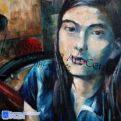

加州學生丁友芃
文 劉莎倫
（羅德島美術設計學院07年新生，同時被芝加哥美術學院、紐約視覺藝術學院、UCLA美術系等全部錄取）
DSC_0015_001
我不是以時間、精力、創意、天份在教學，而是用生命在教學樹人，收穫是如此豐盛。
用全部心血在培養學生，對很多大孩子而言，我是改變他們一生命運的老師！待他們，從感情上就像自己的孩子一樣，丁友芃（Iris）也相同，就像我的寶貝女兒，偷懶的時候，嚴厲對待她，但背着她，我又心疼得直掉眼淚。但是若由着她的性子，又如何成才成器？特別是要在大學主修美術設計、建築等學生，必須進入最頂尖的設計學院。在美國沒有任何專業比美術、音樂更在乎學校的排名了。排名相差兩、三位，孩子的一生就截然不同。所以主修美術設計必須進入羅德島美術設計學院、巴沙迪那的藝術中心學院、耶魯大學設計學院。好在每年我的學生全部進入他們申請的最頂尖美術設計學院。上帝賜給我慧眼，讓我能挖掘別人看不到的東西，並以最合宜的方法訓練學生的潛質最大程度的發揮。Iris的天份，我比任何人都瞭解，但在加州矽谷，眾多的美術老師都只把她當成一個普通的孩子，父母對她也不瞭解，沒有信心。我對自己有信心，從來沒有看錯一個孩子。
Iris小時候短暫和我學過繪畫，我至今清晰記得第一天上課她畫的畫，講的話，喜歡這個孩子很有悟性。想不到上帝安排我在她生命當中擔當一個重要的角色。未來又要使用她去榮耀神的國，傳揚神的道。大概這也是上帝給莎倫畫院的傳承使命。
年紀小小的Iris的畫作就被美國聯邦教育部永久陳列及收藏，在很短時間內，她相繼獲國際和平海報分會及地區第一名，亞太裔繪畫賽金牌，美華防癌海報亞軍，世界兒童畫展等繪畫獎。在加州，第一天上中文學校就趕上現場繪畫比賽，她一加入即取冠軍。幾年後她告訴我，小時候短暫跟我學畫，她即學到如何創作、構圖……每次現場繪畫比賽都拿第一，從未失手。往後卻一直沒有找到合適的老師，學畫終止。
在加州全美最好的高中，Iris的成績也不錯，但她很想大學念美術，經長久禱告，丁媽媽得到神的兩個印證。但找到的老師，每位都沒有絲毫把握，Iris還受到很多傷害、委屈、貶損。當我與她相逢時看到她的樣子，我相當難過。上帝安排Iris來新州隨我學一個月，每天十幾個小時極為艱苦的訓練，我不訓練她的“磨功”，而是重新挖掘她的潛力，鼓勵她把天生感覺釋放出來，重新找回自信。她不但補上好幾年的空白，並完成二十幾幅申請大學的作品，每一幅都有不同風格的代表性。
我清楚神在Iris身上的計劃，上帝如此愛她，讓我參與其中，還原神當初造她時那樣的完美天資。Iris的人與心都全然單純清澈，讓我感動，神的創造奇妙美麗讓我流淚，我與孩 子之間的感情深厚，她不僅僅是我最最心愛的學生之一，也是我在主內的女兒。我把人生最大的經驗體會都教導予她：信仰、生活、藝術以及之間相同要點……我希望每一位學生都是視野開闊、思維深入、判斷敏鋭、知識面廣的人才。
分離很傷感，兩週當中每次想起Iris就流淚。丁媽媽也說，Iris不能聽別人提起劉老師，一提起劉老師就要落淚。
在申請大學前的“大學申請日”，人山人海的申請人潮，Iris只給羅德島美術設計學院、芝加哥美術學院、紐約視覺藝術學院的招生人員看作品，他們非常喜歡，搶着要她申請他們的學校，甚至說申請時不要再交作品了，只需申請獎學金……並不斷給她來函來電催促申請他們的學校，給予極好的獎學金及歐洲交換學生計劃……她申請的學校全部錄取她，包括羅德島美術設計學院（全美繪畫及設計類排名第一）、芝加哥美術學院、馬里南美術學院、紐約視覺藝術學院……Iris原來趨向就讀UCLA，離家近，學費便宜，又是全美公立大學排名第一，純繪畫專業是全美純繪畫類排名第二，能被UCLA錄取也很不容易，錄取率只有17%，她的同學朋友中只有她和另一位被UCLA錄取。但經過廣泛瞭解研究後，Iris決定入讀羅德島美術設計學院。她的名字在新生錄取名單中排在前列。莎倫畫院不少學生在該校就讀。該校不但是全美最好的，也是全球最佳的，大學部的不少專業是五年制課程，可見所學東西豐富紮實精專。雖然難進，但每年依然約有10%學生被淘汰或跟不上進度轉學。
17歲的Iris在同學中總是顯得稚氣，但她越來越自信快樂，前面是艱辛但輝煌的前景，上帝的祝福必與她同在！
（後記：每一個階段Iris的媽媽都會打電話來匯報她的近況。在4年艱苦的大學磨練中，她受了苦也成長了很多，許許多多關於她的故事，許許多多不盡恩典與感恩。現在Iris在亞州從事建築設計工作，忙碌但十分充實和開心。我與Iris的媽媽在關於教育後代及信心上的交通，一直在繼續著，我們心中永懷感恩之情……）
Copyright © 2013 www.sharronartcenter.com
All artworks original, all rights reserved,do not plagiarize.
Do not use text without permission.
版權 © 2013 www.sharronartcenter.com 所有藝術作品皆為原創 版權所有。
盜用必究。 文字非經同意不得轉載。
Sharron Liu 劉莎倫
Categories
Education
莎倫畫廊
藝術經營
視覺焦點
家長必讀
教育反饋
教育案例
校友蹤跡
Life
生活方式
簡約書籤
長話短說
走走停停
心情切片
文圖交織
信仰見證
Sharron Art Center
Sharron Art Center 獎項與畫展
Sharron Art Center 莎倫畫院
Sharron Art Center 暑期特別計劃
Recent Posts
獅會國際和平海報賽 王丹玫奪新州冠軍
如何挑選申請大學的藝術作品集（五）
陈思佳自述（中译）：
Lydia’s Self Description
陳思佳獲視覺藝術大獎
李虹霖 新生代高中生畫家
林宛澄自由與希望獲肯定
呂思瑤 奪全美繪畫金匙獎
如何桃選申請大學的藝術作品集（四）
晝夜倫敦
航行
如何挑选申请大学的艺术作品（三）
如何挑选申请大学的艺术作品（二）
如何挑选申请大学的艺术作品（一）
慈善画展感想
深圳学生林宛澄获奖自述
莎伦校友Ellen荣获美国插图家协会大奖
思考教育的能力
New York Student James Chen’s Speech
大學錄取，亞裔被“反向歧視”， 怎麼辦？
莎倫畫院大學名校校友畢業彙報成績可喜
教育怪圈
國際航空繪畫賽 新州3學子奪獎
Barnabas Luke-上海舊日＂中國銀行＂大廈建築設計師的美國孫子
繞開辣手的教育問題？
莎倫學生William重返莎倫母校與倫敦中央聖馬丁學院面試官愉快重晤
我的神奇和極簡潔的導師
美國跨國公司總裁－上海浦東分享女兒升學心得
分享女儿喜訊
兒子的喜訊
國際環保繪畫大賽 新州華生包前三
方姝獲太空基金會藝術賽冠軍
專致堅忍-莎倫學生Lydia被常春藤賓大華頓商學院提前錄取
Teacher Danielle is So Cool
莎伦学生Linda、Annie被普林斯顿大学提前录取-普通亚裔学子的名校之途
如何分清批評或中肯建議？
我就是我，一個用宇宙都不能交換的我
“多動症兒童”的常春藤之路－莎倫學生Rita被耶魯提前錄取
莎倫畫院的大學名校校友－主編女性雜誌
一種無法記錄的延續
冬天的孤樹
SAC’s Alumni—Mono’s speech in Sharron Art Center
透明的花
2015年全美青年藝術大賽莎倫畫院得獎學生之一的反饋
One of the Reflects from the Student who won the 2015 The National Scholastics Art Awards Competition
莎倫的耶魯校友Mona在莎倫畫院暑期加強營的演講絮語
愛丁城堡 轉角的地方
莎倫學生Grace Chen — 品格的表率
普通亞裔家庭子女的名校競爭之途
過度追求成功是禍是福